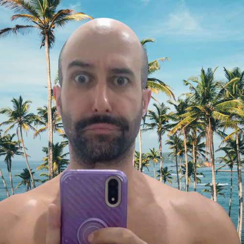

Eu sou um desenvolvedor web com sólidos conhecimentos de HTML, CSS, JavaScript e Docker combinados com excelentes habilidades em capacidade analítica, pensamento conceitual e ética no trabalho. Formado em Sistemas para Internet (UNINOVE, 2022) e apaixonado por resultados extraordinários.
Numa nota mais pessoal, acredito firmemente que a liberdade individual é o valor mais importante. Isto significa, por exemplo, o reconhecimento dos direitos humanos inatos à autonomia corporal, à propriedade privada e à associação pacífica.
Vivo entre as montanhas verdes e as noites serenas na cidade de Petrópolis, Rio de Janeiro, Brasil.